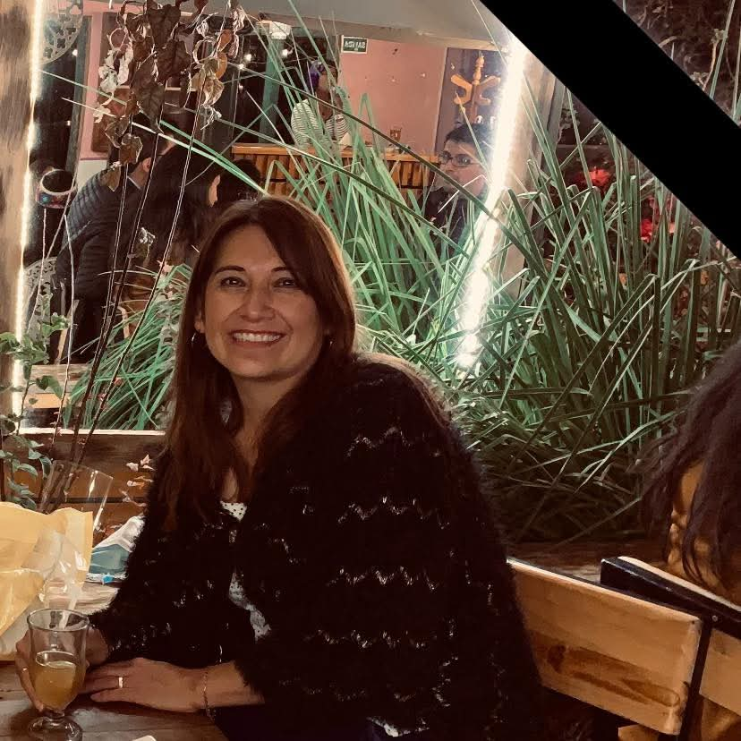

Asesora Senior
María Victoria Zárate Ferro
Lic. en Administración & Magíster en Psicología Educativa
Especialista en gestión institucional y mentoría de proyectos de alto impacto, con una trayectoria enfocada en la formación de líderes y la innovación educativa.
+20
Años de Trayectoria
Cusco
Sede Principal